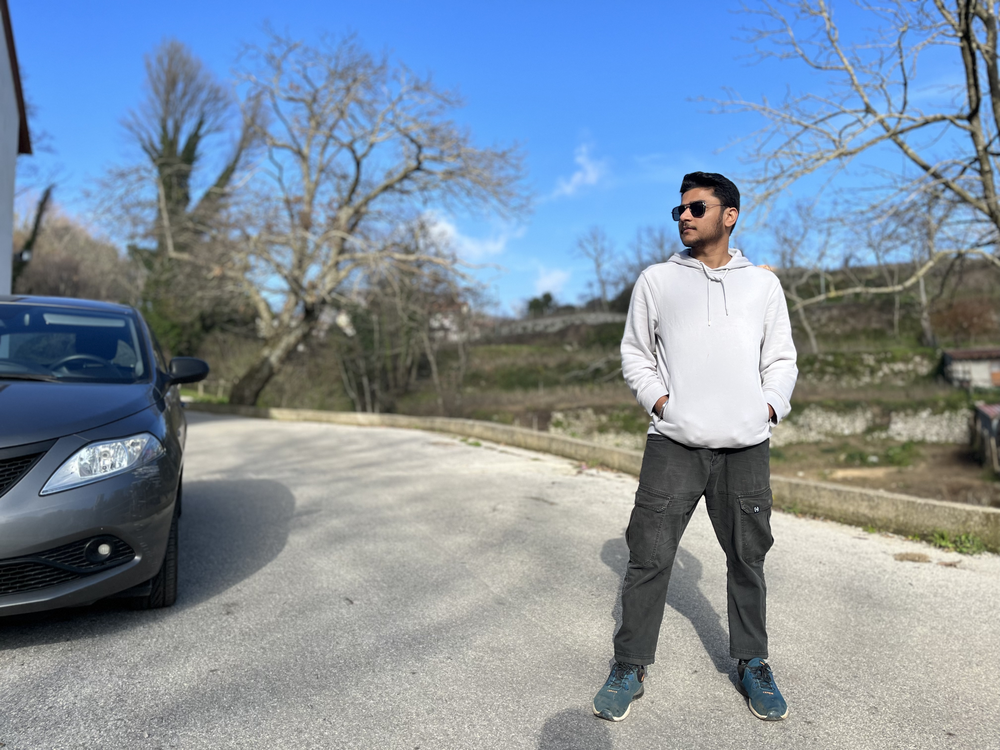
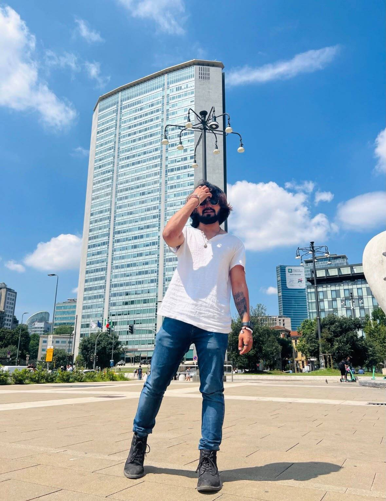
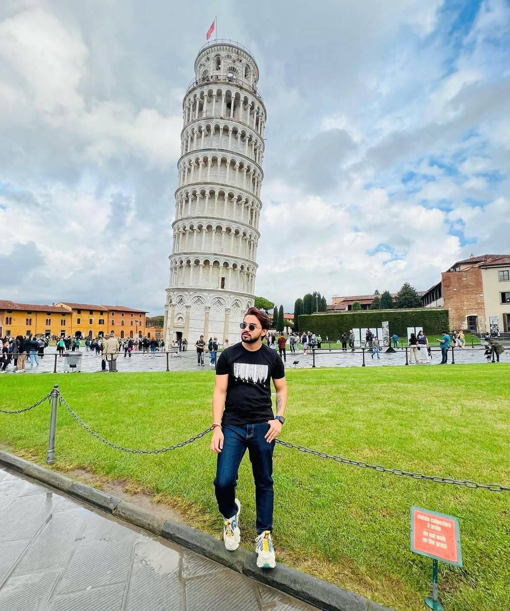
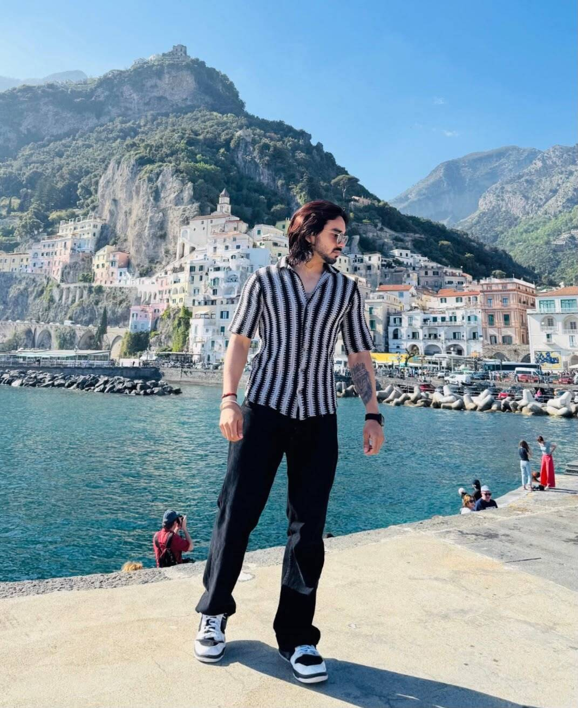
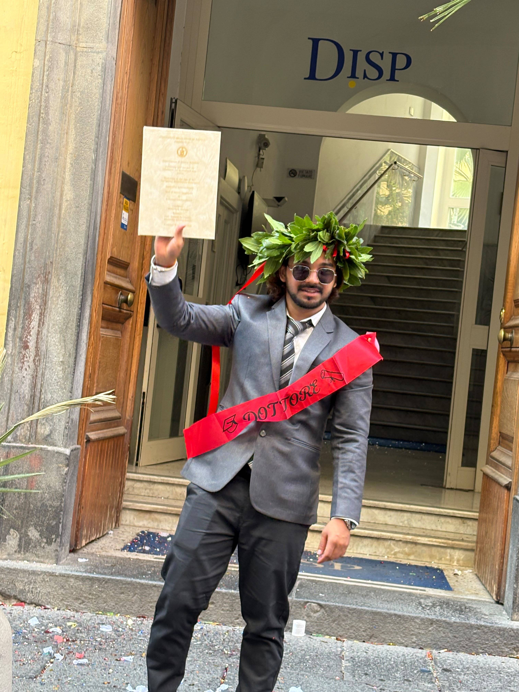
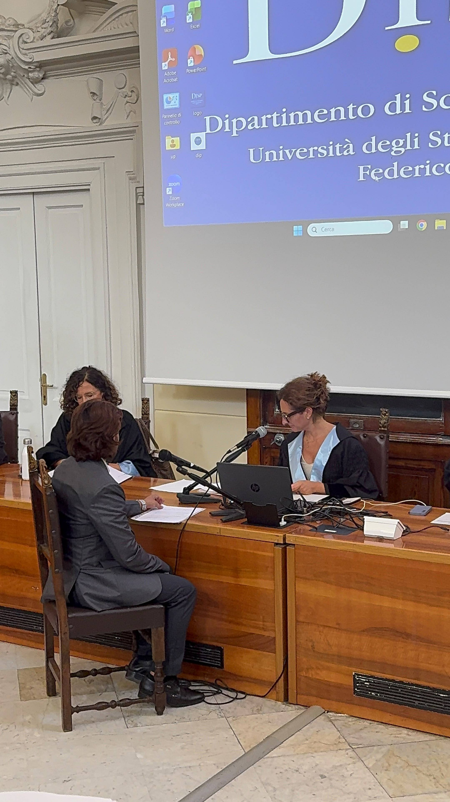

•Behind the Journey
A few glimpses of life between two countries.










Since 2021, Italy has been more than a destination for us. It became a classroom, a challenge and eventually a second home.
Living abroad taught us that international opportunities are rarely just about getting somewhere. They are about understanding what comes before the journey, what happens after arrival, and how prepared you feel when everything around you is unfamiliar.
Those experiences shaped Sentiero Global.
We created it so that students, travellers and ambitious individuals could pursue opportunities beyond borders with clearer information, genuine guidance and the confidence that someone who has lived the process understands what lies ahead.
Our purpose is simple: to help people go further without feeling that they left an opportunity behind.
Jaipur, Rajasthan, India
Data Scientist
To be added.
To be added.
To be added.
To be added.
To be added.
With first-hand experience studying and building a career in Italy, I understand the challenges students face when moving abroad and aims to make their international education journey more informed and seamless.
International Education • University Selection • Student Guidance • Technology • Data Science • International Academic Experience
My own journey from India to Italy showed me that the right guidance can transform the study-abroad experience. Through Sentiero Global, I aim to help students make confident, informed decisions and successfully begin their journey abroad.






See how that experience shapes our education, travel and visa guidance today.